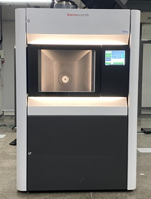

Model: Talos F200X G2 (S) TEM
Make: ThermoFisher Scientific
| Talos F200X G2 (S)TEM | |
|---|---|
| Brightness X-FEG/X-CFEG | 1.8/2.4 × 10⁹ A/cm² srad (@200kV) |
| Super-X EDS system | 4 SDD symmetric design, windowless, shutter-protected |
| EELS resolution | 0.8 eV (X-FEG) / 0.3 eV (X-CFEG) |
| X-Twin | |
| STEM HAADF resolution | 0.16 nm (X-FEG) / 0.14 nm (XCFEG) |
| EDX solid angle | 0.9 srad |
| TEM Information limit | 0.12 nm (X-FEG) / 0.11 nm (XCFEG) |
| Maximum diffraction angle | 24° |
| Maximum tilt angle with double tilt holder | ±35° alpha tilt / ±30° beta tilt |
| Maximum goniometer (stage) tilt angle | ±90° |
Location of Facility:
B03, Basement Floor, New CRF Building IIT Delhi
Sonipat Campus Rajiv Gandhi Education City, Rai,
Sonipat-13102
Haryana, Landmark: Near Ashoka University
Facility Coordinator:
Prof. Ayan Bhowmik
Department of Materials Science and Engineering
IIT Delhi, Hauz Khas, New Delhi – 110016
Phone: 011-26591430
Email: abhowmik@mse.iitd.ac.in
Dr. Roopali & Mr. Baibhav Karan